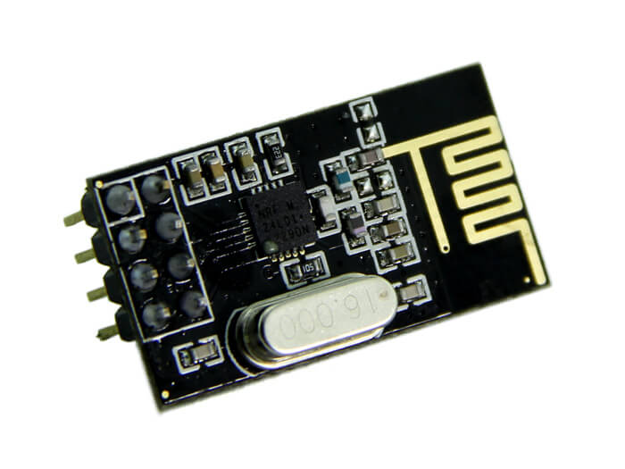

In the previous article we presented you the library we wrote in order to control motors. The last weeks we worked on radio transmitter/receiver. Now the library has been developed we can present it to you through this article.
First, this a photo of the concerned component. As we expected, it is small enough to get the desired dimension for our drone.
Those components, produced by Nordic Semiconductor are well known by Arduino community. Thereby, a wide catalog of examples and a lot of opensource libraries are available on the Internet (especially on GitHub). Then, we took advantage of the success of this component by basing our library on RadioHead, which is offered by Paul Stoffregen.
We represent this component by an instance of Communication class. This is the declaration of this class :
#include <SPI.h>
#include <RH_NRF24.h>
class Communication {
private:
RH_NRF24 _nrf24;
public:
Communication(int pin1, int pin2);
bool initRadio();
bool sendMsg(uint8_t* data, uint8_t len, uint8_t channel);
bool receiveMsg(uint8_t* data, uint8_t len, uint8_t channel);
};
As you can see this class is very minimalist. It has only one attribute and three methods. The attribute represents the component and it comes from Radiohead library. It is with this attribute and the methods we have written that we will ensure communication between the drone and the server. The first method, initRadio(), handles various tests about the state of the component. It checks if the component has been well initialized, its channel, its speeds and power of transmission. Depending on values, the component will be considered ready to be used (or not).
bool Communication::initRadio() {
bool state = true;
if(!_nrf24.init())
state = false;
if(!_nrf24.setChannel(1))
state = false;
if(!_nrf24.setRF(RH_NRF24::DataRate2Mbps, RH_NRF24::TransmitPower0dBm))
state = false;
return state;
}
The other two methods handle data transmission and reception and are not particular.
More concretely, the messages we have sent are of two types:
Messages which come from the server are simple integer vectors of size 4. They allow to send a target position (i.e, three components x, y and z) to a drone. Messages which come from a drone are integer vectors of size 11. One vector, will contains the drone number (channel), a position (x, y and z) and the values collected by the six ultrasonic sensors.
Regardless the type of message, we reserve the last value of the vector in order to communicate some code between the server and drones. These codes could represent error codes, information about the state of a drone or some specific commands. For instance, if the server send the value 0, it could means "Come back to the HQ". Or, if the drone send the value 10, it could means "I have no more battery"
As usual you can download our library on our GitHub.
In order to check the smooth running of our library, we have written an Arduino source code. If you want to try it, you need of course two installations.
#include <SPI.h>
#include <RH_NRF24.h>
#include <communication.h>
uint8_t msg[] = {1, 2, 3, 4};
uint8_t len = sizeof(msg);
bool ok;
Communication com(8, 10);
void setup() {
Serial.begin(9600);
ok = com.initRadio();
if(!ok)
Serial.println("Init error");
}
void loop() {
ok = com.sendMsg(msg, len, 1);
if(!ok)
Serial.println("Sending error");
ok = com.receiveMsg(msg, len, 1);
if(!ok)
Serial.println("Receiving error");
else
Serial.println(msg[0]);
}
This code simply instantiate an object from Communication class and initializes it. In the main loop it sends a message to the other installation and receipts a message from the latter.
The proper manipulation of these components takes us some time because we have tried a lot of different libraries. Also, we faced to a problem : when a component received a message, we could not send a response (or not deterministically). We solved this by adding a capacitor (10uF) between supply and ground. If we refer on what we read on the Internet this issue is due to the low power supplied by the Arduino board.
The next article will focus on the presentation of library to handle gyroscope.